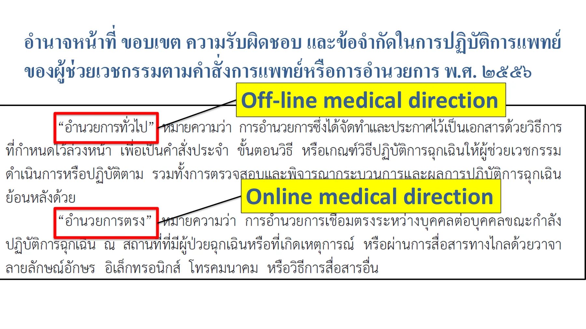
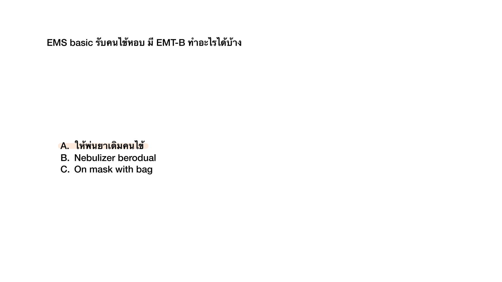

This C special chapter is a collection-first draft. The current goal is to gather old-exam stems and choices into one usable chapter before full answer verification and teaching-note expansion.
Source file: Intraining exam 100 ข้อ 12 Jan 2026 | Intraining source-preserving stem/options. Answer verified against TCEPEMS Online and off-line medical direction resident.pdf p.6.
Reference: Source: Intraining exam 100 ข้อ 12 Jan 2026 | p.43; Teaching reference: TCEPEMS/Online and off-line medical direction resident.pdf | PDF page 6
ซ่อนเฉลยเปิดเฉลยSolution readyC-EMS Q1 answer
Answer
C. อำนวยการทั่วไป
Rationale
โจทย์ถามการอำนวยการที่จัดทำและประกาศไว้เป็นเอกสาร กำหนดเป็นคำสั่งประจำ ขั้นตอนวิธี หรือเกณฑ์วิธีปฏิบัติการล่วงหน้า จึงเข้ากับ off-line medical direction / prehospital protocols ไม่ใช่ online medical direction ที่ต้องปรึกษาแพทย์แบบ real-time.

TCEPEMS Online and off-line medical direction resident.pdf, PDF page 6
References
- Source note: Intraining exam 100 ข้อ 12 Jan 2026, p.43 - Teaching reference: TCEPEMS/Online and off-line medical direction resident.pdf, PDF page 6: slide แยก Off-line medical direction และ Online medical direction ภายใต้หัวข้ออำนาจหน้าที่ ขอบเขต ความรับผิดชอบ และข้อจำกัดในการปฏิบัติการแพทย์ตามคำสั่งการแพทย์หรือการอำนวยการ.
Q2. You are on duty as medical oversight. Which patient has indication for air transport?
Neonatal air transport criteria in Tintinalli include gestational age <30 weeks or weight <2000 g; this is 32 weeks and 2100 g.
ยังไม่ถูก
Obstetric criteria include active premature labor <34 weeks or estimated fetal weight <2000 g; this is 35 weeks and 2100 g.
ยังไม่ถูก
Intubated respiratory failure may require critical-care transport depending resources, but this stem does not give a clear Tintinalli-listed trigger such as pretransport respiratory arrest or risk of airway deterioration.
ยังไม่ถูก
Caveat: Tintinalli also lists emergent dialysis and unstable GI bleeding as possible indications. If this option means true emergent dialysis or unstable GI bleeding, the item is ambiguous; the source-highlighted single-best answer is still A.
Source file: Intraining exam 100 ข้อ 12 Jan 2026 | Content-checked with Tintinalli Emergency Medicine 9th ed Ch.3 Air Medical Transport, Table 3-3. Original source highlight: A.
Reference: Content basis: Tintinalli Emergency Medicine 9th ed, Ch.3 Air Medical Transport, textbook pp.9-13; Table 3-3 on p.12 lists nontrauma air-transport indications including cardiogenic shock. Local Thai EMS slide: TCEPEMS/EMS Operation.pdf pp.65-66 gives air ambulance overview. Source image: Intraining exam 100 ข้อ 12 Jan 2026, printed p.43 / file p.44; original highlight = A.
ยึดจากเนื้อหา Tintinalli เป็นหลัก: ตาราง Air Transport Indications for Nontrauma Conditions ระบุ cardiogenic shock เป็นข้อบ่งชี้ทาง cardiac สำหรับ air transport โดยตรง. ตัวเลือก B และ C ไม่เข้าเกณฑ์อายุครรภ์/น้ำหนักที่ตารางกำหนด. ตัวเลือก D ยังขึ้นกับทรัพยากรและความเสี่ยงระหว่างทาง ไม่ใช่ trigger ชัดจากข้อมูลที่ให้มา. ตัวเลือก E มี caveat เพราะ Tintinalli ระบุ emergent dialysis และ unstable GI bleeding เป็นข้อบ่งชี้ได้ ถ้าโจทย์หมายถึงภาวะนั้นจริงข้อนี้จะกำกวม; อย่างไรก็ตามต้นฉบับไฮไลต์ A และ A เป็นคำตอบ single-best ที่ตรงตารางที่สุด.
Source note
Original Intraining source highlight: A. Content support: Tintinalli Emergency Medicine 9th ed Chapter 3, textbook pp.9-13, especially Table 3-3 on p.12; TCEPEMS EMS Operation.pdf pp.65-66 covers air ambulance overview.
Source file: Intraining exam 100 ข้อ 12 Jan 2026 | Intraining source-preserving stem/options. No official answer key was found in the PDF; keep unanswered until verified. | Review flags: missing_verified_answer_key
อ.ศรัทธา - Medical oversight in EMS 2021.pdf, p.3-4
Original source image preserved from Medical oversight in EMS 2021 p.3-4. Stem/options transcribed from the source image; answer/lesson intentionally not imported.
Reference: Source: อ.ศรัทธา - Medical oversight in EMS 2021.pdf | p.3-4 | paired source pages rendered; answer intentionally not imported.
อ.ศรัทธา - Medical oversight in EMS 2021.pdf, p.12-13
Original source image preserved from Medical oversight in EMS 2021 p.12-13. Stem/options transcribed from the source image; answer/lesson intentionally not imported.
Reference: Source: อ.ศรัทธา - Medical oversight in EMS 2021.pdf | p.12-13 | paired source pages rendered; answer intentionally not imported.
Q6. คำถามที่ 3 ในสถานการณ์นี้ใครทำการปฐมพยาบาล นาย ก ล้มหมดสติ นาย A โทรแจ้ง 1669 และทำ CPR ตามคำแนะนำของ EMD นาย C เป็นอาสากู้ชีพมา CPR และใช้ AED เครื่อง AED สั่งให้ shock นาย C กด shock นฉพ D มาถึงใส่ tube และ พฉพ E กดหน้าอก และนำส่งโรงพยาบาล
อ.ศรัทธา - Medical oversight in EMS 2021.pdf, p.22
Original source image preserved from Medical oversight in EMS 2021 p.22. Choices transcribed from the source image including the visible A/B/C/E labels; answer/lesson intentionally not imported.
Reference: Source: อ.ศรัทธา - Medical oversight in EMS 2021.pdf | p.22 | paired source pages rendered; answer intentionally not imported.
อ.ศรัทธา - Medical oversight in EMS 2021.pdf, p.55
Paired source image preserved from อ.ศรัทธา - Medical oversight in EMS 2021.pdf p.55. No answer/lesson in this collection pass.
Reference: Source: อ.ศรัทธา - Medical oversight in EMS 2021.pdf | p.55 | paired source pages rendered; answer intentionally not imported.
Q10. คําถามทีÉ 7 หน่วยปฏิบัติการแพทย์ระดับสูง ได้ติดต่อท่านในฐานะแพทย์อํานวยการปฏิบัติฉุกเฉินระดับ พืÊนทีÉเพืÉอขอการอํานวยการตรง ในกรณีผู้ป่วยชายอายุ 65 ปี มีโรคประจําตัวเบาหวาน ความ ดันโลหิตสูง เดิมปกติ ญาติไปพบเดินแล้วล้ม แขนขาด้านซ้ายอ่อนแรงทันที ไม่พูด 10 นาที ก่อนโทรแจ้ง 1669 หน่วยมาตรวจผู้ป่วย พบ BP 180/90 mmHg GCS E3V2M5 Motor power left side grade I, left facial palsy, global aphasia, eye deviate to left side POCT glucose = 120 mg% ท่านจะให้การอํานวยการตรงนําส่งโรงพยาบาลใด
อ.ศรัทธา - Medical oversight in EMS 2021.pdf, p.62
Paired source image preserved from อ.ศรัทธา - Medical oversight in EMS 2021.pdf p.62. No answer/lesson in this collection pass.
Reference: Source: อ.ศรัทธา - Medical oversight in EMS 2021.pdf | p.62 | paired source pages rendered; answer intentionally not imported.
อ.ศรัทธา - Medical oversight in EMS 2021.pdf, p.69
Paired source image preserved from อ.ศรัทธา - Medical oversight in EMS 2021.pdf p.69. No answer/lesson in this collection pass.
Reference: Source: อ.ศรัทธา - Medical oversight in EMS 2021.pdf | p.69 | paired source pages rendered; answer intentionally not imported.
Q12. คําถามทีÉ 9 ท่านเป็นแพทย์ออกเหตุกับทีม ALS ผู้ป่วยหญิง 60 ปี หอบเหนืÉอยนอน ราบไม่ได้ 3 วัน โรคประจําตัวเป็น ischemic cardiomyopathy. ตรวจ ร่างกายทีÉเกิดเหตุT 37 c P 110/min RR 30/min BP 90/60 mmHg O2sat 92% (mask with bag 10 LPM). alert and looked dyspnea. Her breath sound was bilateral fine crepitation. Her BMI was 30 kg/m2 Her monitor ECG showed atrial fibrillation rate 110/min. ระยะทางไปรพ.ประมาณ 10 นาที การรักษาข้อใดเหมาะสมทีÉสุด
อ.ศรัทธา - Medical oversight in EMS 2021.pdf, p.78
Paired source image preserved from อ.ศรัทธา - Medical oversight in EMS 2021.pdf p.78. No answer/lesson in this collection pass.
Reference: Source: อ.ศรัทธา - Medical oversight in EMS 2021.pdf | p.78 | paired source pages rendered; answer intentionally not imported.
อ.ศรัทธา - Medical oversight in EMS 2021.pdf, p.92
Paired source image preserved from อ.ศรัทธา - Medical oversight in EMS 2021.pdf p.92. No answer/lesson in this collection pass.
Reference: Source: อ.ศรัทธา - Medical oversight in EMS 2021.pdf | p.92 | paired source pages rendered; answer intentionally not imported.
Q23. 187. มีหลายหน่วยงานเข้ามาในเหตุเดียวกัน เราเป็นหน่วย EMS มีหน่วย fire/police/ems ตามหลัก NIMS สั่ง command แบบใด What is the most appropriate type area command
MCQ 2566 combined.pdf, p.32
ยังไม่ถูก
A. Unity command
ถูกต้อง
NIMS uses unified command when fire, police, and EMS share responsibility for one incident.
ยังไม่ถูก
C. regional command
ยังไม่ถูก
D. Chain of command
Source image preserved from MCQ 2566 combined.pdf p.32. No answer/lesson in this collection pass.
Reference: Source: MCQ 2566 combined.pdf | p.32 | full source page rendered; answer intentionally not imported.
D. กุมารแพทย์ที่มีประสบการณ์ด้านการแพทย์ฉุกเฉินและผ่านการอบรมแพทย์อำนวยการ
Rationale
A physician from another specialty can qualify if they have emergency experience and complete approved medical director training.
Q12. EMS medical director ต้องต่ออายุทุกกี่ปี
รวมข้อสอบ-board-2562-CHULA.pdf, p.14
Source file: รวมข้อสอบ-board-2562-CHULA.pdf | Targeted repair from page 14. Source contains complete choices, but no answer mark was available, so the answer remains needs_review.
Source file: รวมข้อสอบ-board-2562-CHULA.pdf | Targeted repair from page 36. Source contains complete choices, but no answer mark was available, so the answer remains needs_review.
The stem asks a Thai EMS reimbursement amount for a specialist team treating hypoglycemia with IV glucose, with the patient waking after treatment. Interpreting the stem as treated but not transported after improvement, the NIEMS ground-operation reimbursement table maps a red/critical treated-not-transported medical operation by a specialist-level unit to 1,100 baht. If an omitted source detail stated treatment with transport, the amount would differ, so that assumption is recorded here.
The stem asks a Thai EMS reimbursement amount for a specialist team treating hypoglycemia with IV glucose, with the patient waking after treatment. Interpreting the stem as treated but not transported after improvement, the NIEMS ground-operation reimbursement table maps a red/critical treated-not-transported medical operation by a specialist-level unit to 1,100 baht. If an omitted source detail stated treatment with transport, the amount would differ, so that assumption is recorded here.
Live crew-to-physician consultation during patient care is direct medical direction.
Q9. EMS dispatcher ordered ALS and BLS system cooperates to take a male 60-year-old who was dyspnea sweating and cold extremities. How long BLS system should take to the patient?
MCQ 2566 combined.pdf, p.31
ถูกต้อง
For red-code response, the closest available team should reach the patient within 4 minutes, with ALS following within 8 minutes.
An out-of-hand BLS situation should be upgraded with ALS support.
Q16. Which of the following is the EMS response development model that considers patterns in the location of calls for the particular time of day, day of week, and time of year; an vehicles are then placed at locations that are most likely to optimize the systemTabiliUZUPSeTQPndUP those anticipated call patterns?
รวมข้อสอบ-board-2562-CHULA.pdf, p.16
ยังไม่ถูก
A. single-tiered systems
ยังไม่ถูก
B. Multi- tiered systems
ยังไม่ถูก
C. Static deployment model
ยังไม่ถูก
D. Ambulance management model
ถูกต้อง
Dynamic ambulance posting based on predicted call pattern is system status management.
Scene safety, extrication, road operations, transport decisions, air/water transport, equipment, and resource logistics.
33 questions · 28 answered · 5 review-only
Q6. 50 yrs male collision vehicle in stunk in car on sitting position Primary survey can talk ,good conscious Chest pain dyspnea weak radial pulse on palpitation เราเป็นแพทย์EMS ท าไงดี
MCQ 2566 combined.pdf, p.29
ยังไม่ถูก
A. vaccuum mattrest
ยังไม่ถูก
B. KED
ยังไม่ถูก
C. emergency drag with cervical
ถูกต้อง
Entrapment with dyspnea, chest pain, and weak radial pulse suggests instability requiring rapid extrication with C-spine protection.
Pre-arrival childbirth advice should keep the mother calm and avoid unsafe improvised steps while EMS responds.
Q29. 170. 50 yrs male collision vehicle stuck in car on sitting position Primary survey can talk, good conscious, chest pain dyspnea weak radial pulse on palpitation เราเป็นแพทย์ EMS ทำไงดี
MCQ 2566 combined.pdf, p.29
ยังไม่ถูก
A. vacuum mattress
ยังไม่ถูก
B. KED
ยังไม่ถูก
C. emergency drag with cervical
ถูกต้อง
Shock signs in an entrapped crash patient make rapid extrication with spinal protection the best option.
ยังไม่ถูก
E. Rapid extraction with blanket collar
Source image preserved from MCQ 2566 combined.pdf p.29. No answer/lesson in this collection pass.
Reference: Source: MCQ 2566 combined.pdf | p.29 | full source page rendered; answer intentionally not imported.
Near-amputation/field amputation decisions require on-scene medical control.
Q38. 41. ท่านเป็น EMS director ทำการวิเคราะห์ข้อมูลระบบ EMS ซึ่งข้อมูลเวร ช บ ด ใน 24 hr และ data stable for 3 month: ทีม ALS 2/2/2, response time average 7.55/7.58/6.52, unit utilization ratio 0.5/0.9/0.4 ท่านจะปรับเปลี่ยนให้เหมาะสมอย่างไร
MCQ-202024.pdf.pdf, p.3
ถูกต้อง
The afternoon utilization ratio is highest, so add afternoon capacity.
ยังไม่ถูก
B. ลดทีมเวรดึก
ยังไม่ถูก
C. เก็บข้อมูลเพิ่มอีก 1 เดือน
ยังไม่ถูก
D. เปลี่ยนมาใช้ system status management
ยังไม่ถูก
E. เปิด siren และไฟวับวาบเพื่อให้รถขับเร็วขึ้น
Source image preserved from MCQ-202024.pdf.pdf p.3. No answer/lesson in this collection pass.
Reference: Source: MCQ-202024.pdf.pdf | p.3 | full source page rendered; answer intentionally not imported.
Pre-arrival delivery advice should keep the mother calm and wait for EMS unless delivery is imminent.
Q15. ผู้ป่วย car accident อยู่ในรถ ตรวจร่างกายระบบอื่นปกติ แต่มี fracture neck of femur จะเคลื่อนย้ายอย่างไร
รวมข้อสอบ-board-2562-CHULA.pdf, p.17
Source file: รวมข้อสอบ-board-2562-CHULA.pdf | Targeted repair from page 17. Source contains complete choices, but no answer mark was available, so the answer remains needs_review.
The case asks which team to request help from when an advanced EMS team lacks ready equipment before a time-sensitive stroke response. Stroke is one of the named examples of a specialized EMS operation group, so the best matching team category is the specialist-level medical operation team rather than a general advanced or consultant-level team. Option C remains truncated in the source image, but the visible category set and stroke-specific context support option D.
The case asks which team to request help from when an advanced EMS team lacks ready equipment before a time-sensitive stroke response. Stroke is one of the named examples of a specialized EMS operation group, so the best matching team category is the specialist-level medical operation team rather than a general advanced or consultant-level team. Option C remains truncated in the source image, but the visible category set and stroke-specific context support option D.
References
- Source crop: `source_pdf_inventory/question_crops/mcq-202024-pdf/mcq-202024-pdf_page_0003_full.png`. - Supporting EMS source: NIEMS reimbursement/operation guidance PDF `https://www.niems.go.th/1/UploadAttachFile/2023/EBook/418211_20230705092604.pdf` mentions specialized groups such as Stroke, STEMI, and Trauma.
Penetrating chest traumatic arrest needs treatment of reversible tension pneumothorax while CPR continues.
Q21. 161. 18 yo male เล่นบอล 1 h ตอนเที่ยง แล้ว ... + tachycardia EMS ออกไปดู ตรวจพบ v/s BT 39.6 HR 140 BP 140/100 RR 24 Sat 99 โทรกลับมาถามท่านที่เป็น medical director. What is appropriate initial management?
MCQ 2566 combined.pdf, p.28
ยังไม่ถูก
A. Intubation
ยังไม่ถูก
B. Paracetamol
ยังไม่ถูก
C. Remove clothes
ถูกต้อง
Exertional heat stroke requires immediate rapid cooling; cold-water immersion is the fastest listed method.
ยังไม่ถูก
E. Cold NSS IV infusion
Source image preserved from MCQ 2566 combined.pdf p.28. No answer/lesson in this collection pass.
Reference: Source: MCQ 2566 combined.pdf | p.28 | full source page rendered; answer intentionally not imported.
Exertional heat stroke requires immediate rapid cooling; cold-water immersion is the fastest listed method.
Q26. 97. A 67-year-old man is experiencing chest pain. He has a history of hypertension. His BP is 200/130 mmHg. Prehospital 12-lead ECG reveals ST-segment depression in inferior and anterior leads. What is the most appropriate action by the on-scene EMS physician?
Intraining exam 100 ข้อ 12 Jan 2026.pdf, p.44
Source image preserved from Intraining exam 100 ข้อ 12 Jan 2026.pdf p.44. No answer/lesson in this collection pass.
Reference: Source: Intraining exam 100 ข้อ 12 Jan 2026.pdf | p.44 | full source page rendered; answer intentionally not imported.
Q27. 99. A 68-year-old woman with a history of hypertension and atrial fibrillation is found unresponsive at home by her daughter. EMS arrives within 20 minutes of the call. On assessment, she has slurred speech, right-sided hemiparesis, and a GCS of 12. Blood glucose is 110 mg/dL. The nearest stroke-capable hospital is 45 minutes away. What is the most appropriate prehospital intervention for this patient?
Intraining exam 100 ข้อ 12 Jan 2026.pdf, p.45
ยังไม่ถูก
A. Delay transport to obtain a field CT scan at a mobile stroke unit
ยังไม่ถูก
B. Administer 2 mg of midazolam IV for possible seizure and reassess
ยังไม่ถูก
C. Administer aspirin 300 mg orally and transport to the nearest hospital
ยังไม่ถูก
D. Perform rapid sequence intubation due to the risk of airway compromise
ถูกต้อง
Acute focal deficits with normal glucose and early presentation should trigger stroke activation and transport to a stroke-capable center.
Source image preserved from Intraining exam 100 ข้อ 12 Jan 2026.pdf p.45. No answer/lesson in this collection pass.
Reference: Source: Intraining exam 100 ข้อ 12 Jan 2026.pdf | p.45 | full source page rendered; answer intentionally not imported.
E. Activate a stroke code and transport to the nearest stroke center with IV thrombolysis capability
Rationale
Acute focal deficits with normal glucose and early presentation should trigger stroke activation and transport to a stroke-capable center.
Q28. 100. BLS team was dispatched to get the woman who had palpitation. She felt dizzy and chest tightness. Vital sign T 37°C, PR 30, RR 20, BP 80/50 mmHg O2sat 92%. ECG monitor second degree AV block (Mobitz II). Which of the following is appropriate management?
Intraining exam 100 ข้อ 12 Jan 2026.pdf, p.45
ยังไม่ถูก
A. IV fluid
ยังไม่ถูก
B. O2 cannular
ถูกต้อง
Symptomatic Mobitz II with hypotension is an unstable conduction problem; pacing is the best listed intervention.
ยังไม่ถูก
D. Atropine 1 mg IV
ยังไม่ถูก
E. Synchronous cardioversion
Source image preserved from Intraining exam 100 ข้อ 12 Jan 2026.pdf p.45. No answer/lesson in this collection pass.
Reference: Source: Intraining exam 100 ข้อ 12 Jan 2026.pdf | p.45 | full source page rendered; answer intentionally not imported.
After failed peripheral IV attempts in arrest, IO access is appropriate and in this exam context is requested via online direction.
Q44. 130. 27 YOM motorcycle accident มี penetrating wound 4th ICS, MCL ข้างขวา EMS ทำ three side occlusive dressing มาแล้ว มาถึง ER เป็น tension pneumothorax ข้างขวา what is the appropriate next step?
MCQ 2025 รวมไม่แยกหัวข้อ.pdf, p.112
ยังไม่ถูก
A. IV fluid
ยังไม่ถูก
B. Needle thoracocentesis
ยังไม่ถูก
C. ICD
ยังไม่ถูก
D. ETT
ถูกต้อง
Tension physiology after an occlusive dressing should prompt immediate release/lift of the dressing.
Source image preserved from MCQ 2025 รวมไม่แยกหัวข้อ.pdf p.112. No answer/lesson in this collection pass.
Reference: Source: MCQ 2025 รวมไม่แยกหัวข้อ.pdf | p.112 | full source page rendered; answer intentionally not imported.
The salvageable airway/face-neck burn patient goes first; the 100% burn with profound shock is expectant/lowest transport priority.
Q3. ญ. 70 ปี DM, HT ญาติเรียก ems ออกรับ ไข้ ซึม v/s BT 38, HR 120, RR 30, BP 80/50, O2 sat 95%, scene ห่างจากรพ. 15 นาที For prehospital setting, which one can decrease mortality
MCQ 2566 combined.pdf, p.29
ยังไม่ถูก
A. Empiric ATB
ยังไม่ถูก
B. Norepinephrine
ถูกต้อง
In prehospital septic shock, early isotonic fluid bolus is the listed intervention most likely to help before hospital care.
RR 8 with coma and hypoxemia is inadequate ventilation; BVM comes first.
Q20. 172. You are advance EMS team, ออกรับชาย 20 ปี motor vehicle collisions, unconscious, breathing normally, no stridor, BP 120/80, O2 sat 95%, Lung clear, GCS E1V1M1 You plan helicopter transport to trauma center level1, which airway mx is safe
MCQ 2566 combined.pdf, p.30
Source image preserved from MCQ 2566 combined.pdf p.30. No answer/lesson in this collection pass.
Reference: Source: MCQ 2566 combined.pdf | p.30 | full source page rendered; answer intentionally not imported.
Q21. 71. อยู่ที่ scene เด็กจมน้ำ หายใจ gasping RR 8 ยังมี pulse 110 O2sat 89% scene ห่างจาก รพ. 30 min ถาม next mx
MCQ 2563 by EP15 Rajavithi.pdf, p.15
ยังไม่ถูก
A. on mask with bag
ยังไม่ถูก
B. insert ET tube
ถูกต้อง
A drowning child with pulse but gasping RR 8 needs assisted ventilation.
Source image preserved from MCQ 2563 by EP15 Rajavithi.pdf p.15. No answer/lesson in this collection pass.
Reference: Source: MCQ 2563 by EP15 Rajavithi.pdf | p.15 | full source page rendered; answer intentionally not imported.
The immediate problem is hypoventilation with coma; assist ventilation first.
Q36. 66. You are receiving a call from an EMT who is on scene with a 55-year-old female patient with a chief complaint of drowsiness. On arrival, the patient is unresponsive, stridors and secretion within oral cavity. A palpable pulse is detected. Her initial vital signs are BP 70/45 mmHg, HR 120/min, RR 12/min, and SpO2 85% (RA). What is the proper online medical direction to an EMT for this patient?
Intraining exam 100 ข้อ 12 Jan 2026.pdf, p.30
ยังไม่ถูก
A. On nasal cannula 5 LPM
ถูกต้อง
Unresponsive patient with pulse, airway noise, and hypoxemia needs basic airway adjunct plus assisted ventilation.
ยังไม่ถูก
C. On supraglottic airway device
ยังไม่ถูก
D. Assess capillary blood glucose
ยังไม่ถูก
E. IV access with NSS Load 500 ml
Source image preserved from Intraining exam 100 ข้อ 12 Jan 2026.pdf p.30. No answer/lesson in this collection pass.
Reference: Source: Intraining exam 100 ข้อ 12 Jan 2026.pdf | p.30 | full source page rendered; answer intentionally not imported.
If ET success is only 40% and ventilation is possible, supraglottic airway is safer system strategy.
C-0013C-Q0013solution_ready
Preterm 30wk NB, คลอดที่บ้าน, paramed+AEMT ออก at scene no pulse ทำ PPV 15 sec ไป ไม่หายใจ chest ไม่ move PR 40 SpO2 preductal reach target , paramed โทรขอ online medical direction?
crop
ยังไม่ถูก
A. Needle thoracostomy
ยังไม่ถูก
B. CPR
ถูกต้อง
A nonvigorous newborn with ineffective PPV needs ventilation corrective steps first because ventilation is the key intervention in neonatal resuscitation.
A nonvigorous newborn with ineffective PPV needs ventilation corrective steps first because ventilation is the key intervention in neonatal resuscitation.
C-0098C-Q0098solution_ready
EMS basic รับคนไข้หอบ มี EMT-B ทำอะไรได้บ้าง

crop
ถูกต้อง
The reviewed EMS scope slide marks option A for EMT-B/basic asthma care, while nebulizer is not marked as the answer for this level.
A. Assist the patient with their own inhaled medication
Rationale
The reviewed EMS scope slide marks option A for EMT-B/basic asthma care, while nebulizer is not marked as the answer for this level.
Triage / MCI / Disaster / Hazmat
Triage systems, disaster management, mass gathering, ICS, hazmat, and multiple-casualty response.
23 questions · 21 answered · 2 review-only
Q1. A mass shooting occurs at a shopping mall, resulting in over 30 casualties. As the EMS medical director, you arrive at the command center. What should be your first priority?
Intraining exam 100 ข้อ 12 Jan 2026, p.44
ยังไม่ถูก
A. Perform on-site triage and start treating the most severely injured
ถูกต้อง
In a mass shooting, the first medical director role is command and coordination, not individual treatment.
ยังไม่ถูก
C. Direct EMS to treat minor injuries first to reduce the overall patient load
ยังไม่ถูก
D. Transport all critical patients to the nearest hospital as quickly as possible
ยังไม่ถูก
E. Call additional ambulances and wait for hospital clearance before transport
Source file: Intraining exam 100 ข้อ 12 Jan 2026 | Intraining source-preserving stem/options. No official answer key was found in the PDF; keep unanswered until verified. | Review flags: missing_verified_answer_key
Concept: not green; uncontrolled groin bleeding should be immediate/red after hemorrhage control.
Rationale
Triage sieve starts with walking wounded as green only if there is no life-threatening problem. Uncontrolled groin bleeding is a major hemorrhage problem and should not remain green.
C-0011C-Q0011solution_ready
เก็บวิจัย triage เก็บเป็นแบบไหน
crop
ถูกต้อง
This asks what indicator to use for measuring ED triage performance; KPI is the performance-measurement frame.
AED shortage is a resource/supply problem in incident management, so it belongs under logistics.
Trauma / Pediatric EMS
Trauma, hemorrhage control, pediatric choking/SVT/airway, and pediatric EMS special situations.
23 questions · 23 answered · 0 review-only
Q35. 168. You were medical director to response child with choking, EMS reach to patient was a 5 years old boy, alert partial speaking and SpO2 95%. What is your order?
MCQ 2566 combined.pdf, p.29
ยังไม่ถูก
A. Heimlich
ยังไม่ถูก
B. 5 back blows 5 chest thrust
ยังไม่ถูก
C. Recovery position
ถูกต้อง
Partial choking with speech and adequate oxygenation is managed by encouraging cough.
Source image preserved from MCQ 2566 combined.pdf p.29. No answer/lesson in this collection pass.
Reference: Source: MCQ 2566 combined.pdf | p.29 | full source page rendered; answer intentionally not imported.
Partial choking with speech and adequate oxygenation is managed by encouraging cough.
Q37. 167. 30 years old male was stabbed at left chest wall, EMS team helping at scene found 2 x 4 cm wound at left parasternal with no pulse, start manual CPR, ETT was inserted and adrenaline was administration. You were medical director, what is additional treatment to order?
MCQ 2566 combined.pdf, p.29
ยังไม่ถูก
A. Chest tube drainage
ถูกต้อง
Penetrating chest traumatic arrest should be treated for reversible thoracic obstruction with bilateral decompression.
ยังไม่ถูก
C. Change to mechanical CPR
ยังไม่ถูก
D. Three side occlusive dressing left chest wound
Source image preserved from MCQ 2566 combined.pdf p.29. No answer/lesson in this collection pass.
Reference: Source: MCQ 2566 combined.pdf | p.29 | full source page rendered; answer intentionally not imported.
A responsive child older than 1 year with severe choking and ineffective cough should receive abdominal thrusts.
Q4. 30 years old male was stabbed at left chest wall. EMS found a 2x4 cm wound at left parasternum with no pulse, started manual CPR, inserted ETT, and gave adrenaline. As medical director, what additional treatment should be ordered?
MCQ 2566 combined.pdf, p.29
ยังไม่ถูก
A. [source option unreadable]
ยังไม่ถูก
B. Chest tube drainage
ถูกต้อง
Traumatic arrest after penetrating chest injury requires treatment of reversible thoracic causes.
Traumatic arrest after penetrating chest injury requires treatment of reversible thoracic causes.
Q5. You were medical director to response child with choking, EMS reach to patient was a 5 years old boy, alert, partial speaking and SpO2 95%. What is your order?
MCQ 2566 combined.pdf, p.29
ยังไม่ถูก
A. Heimlich
ยังไม่ถูก
B. 5 back blows 5 chest thrust
ยังไม่ถูก
C. Recovery position
ยังไม่ถูก
D. [source option unreadable]
ถูกต้อง
Partial choking with speech and adequate oxygenation is managed by encouraging cough.
Partial choking with speech and adequate oxygenation is managed by encouraging cough.
Q22. 16-month old สําลักกล้วย EMS ออกรับยังร้องมีเสียง มา ER - decrease BS ไอไม่มีเสียง เหนื่อย มากขึ้น เริ่มซึม เริ่ม complete upper airway obstruction What is the appropriate next management?
MCQ 2025 รวมไม่แยกหัวข้อ.pdf, p.144
ยังไม่ถูก
A. Back blow
ยังไม่ถูก
B. Chest thrust
ยังไม่ถูก
C. Helmlich maneuver
ยังไม่ถูก
D. Suction
ถูกต้อง
Worsening complete foreign-body obstruction in the ED should be managed by direct laryngoscopy and removal if visible.
Neonatal PPV without chest movement requires ventilation corrective steps before compressions or drugs.
Q42. 81. Preterm 30 wk normal labor at home Initial management by paramedic and EMS ไม่หายใจ start PPV for 15 sec apnea, no chest move, HR 40 bpm What is the most appropriate next step management?
MCQ-202024.pdf.pdf, p.10
ยังไม่ถูก
A. Adrenaline
ยังไม่ถูก
B. Needle thoracostomy
ยังไม่ถูก
C. ETT
ยังไม่ถูก
D. CPR
ถูกต้อง
No chest movement during neonatal PPV means ventilation is ineffective; correct ventilation first.
Source image preserved from MCQ-202024.pdf.pdf p.10. No answer/lesson in this collection pass.
Reference: Source: MCQ-202024.pdf.pdf | p.10 | full source page rendered; answer intentionally not imported.
Persistent extremity bleeding despite direct pressure should be controlled with a tourniquet.
Q7. 127. 34 ปี ขับรถชน มี large laceration ที่ scalp EMS ทำ manual in-line BT 37 BP 80/50 RR 8 shallow no stridor P130 O2sat 93 E1V1M2 pupils react to light both eyes Normal chest and abdominal exam What is the most priority management
MCQ 2025 รวมไม่แยกหัวข้อ.pdf, p.109
ถูกต้อง
RR 8 shallow after trauma is ventilation failure; assisted ventilation is priority.
ยังไม่ถูก
B. Secure IV access
ยังไม่ถูก
C. IV fluid
ยังไม่ถูก
D. Stabilize C spine
ยังไม่ถูก
E. ETT
Source image preserved from MCQ 2025 รวมไม่แยกหัวข้อ.pdf p.109. No answer/lesson in this collection pass.
Reference: Source: MCQ 2025 รวมไม่แยกหัวข้อ.pdf | p.109 | full source page rendered; answer intentionally not imported.
RR 8 shallow after trauma is ventilation failure; assisted ventilation is priority.
Q8. 144. Accident, left arm wound, active arterial pulsatile bleeding, cap refill 3 sec, ใส่ tourniquet เหนือแผลแล้ว มาถึง ER ยังคง active bleed What next step management
MCQ 2025 รวมไม่แยกหัวข้อ.pdf, p.118
ยังไม่ถูก
A. Direct pressure
ยังไม่ถูก
B. Hemostatic agent
ถูกต้อง
Ongoing pulsatile bleeding despite one tourniquet requires a second proximal tourniquet.
ยังไม่ถูก
D. Surgical explore
ยังไม่ถูก
E. Packed gauzed pressure
Source image preserved from MCQ 2025 รวมไม่แยกหัวข้อ.pdf p.118. No answer/lesson in this collection pass.
Reference: Source: MCQ 2025 รวมไม่แยกหัวข้อ.pdf | p.118 | full source page rendered; answer intentionally not imported.
Partial speaking means partial obstruction; encourage cough.
Q11. 177. 16-month old สำลักกล้วย EMS ออกรับยังร้องมีเสียง มา ER - decrease BS ไอไม่มีเสียง เหนื่อยมากขึ้น เริ่มซึม เริ่ม complete upper airway obstruction What is the appropriate next management?
MCQ 2025 รวมไม่แยกหัวข้อ.pdf, p.144
ยังไม่ถูก
A. Back blow
ยังไม่ถูก
B. Chest thrust
ยังไม่ถูก
C. Heimlich maneuver
ยังไม่ถูก
D. Suction
ถูกต้อง
Worsening complete obstruction in ED should be managed by direct visualization/removal if possible.
Source image preserved from MCQ 2025 รวมไม่แยกหัวข้อ.pdf p.144. No answer/lesson in this collection pass.
Reference: Source: MCQ 2025 รวมไม่แยกหัวข้อ.pdf | p.144 | full source page rendered; answer intentionally not imported.
A conscious child older than 1 year with severe choking should receive abdominal thrusts.
McGraw Board Review Section
McGraw Chapter 1 review questions kept as the final reference section.
20 questions · 20 answered · 0 review-only
Q1. According to the Emergency Medical Treatment and Active Labor Act (EMTALA) of 1986, hospitals wish ing to transfer a patient to another facility for a higher level of care must do the following prior to transfer ring the patient?
McGraw Chapter 1: Prehospital Care and Disaster Management, p.12
ยังไม่ถูก
A. Complete all diagnostic tests
ยังไม่ถูก
B. Collect payment from the patient
ยังไม่ถูก
C. Have an existing transfer contract with the receiving hospital
ถูกต้อง
EMTALA requires medical screening and stabilizing treatment before transfer when possible.
Source file: McGraw Chapter 1: Prehospital Care and Disaster Management
A. Collect complete data on cardiac arrest patients and compare outcomes to other EMS systems
Rationale
Utstein standardizes cardiac arrest data reporting for outcome comparison.
Q3. An ambulance unit responds to the scene of a cardiac arrest patient. Describe the differences or similarities between a defibrillator used by advanced life support (ALS) personnel, such as a paramedic versus that used by basic life support (BLS) personnel, such as an emergency medical technician (EMT)-basic.
McGraw Chapter 1: Prehospital Care and Disaster Management, p.12
ยังไม่ถูก
A. A defibrillator used by both ALS and BLS per sonnel does not display the heart rhythm that the patient is experiencing, in case the EMS provider should get confused and delay delivering the shock. 1
ยังไม่ถูก
B. The defibrillator used by both ALS and BLS per sonnel displays the heart rhythm, but the ALS unit can select whether or not to shock, whereas the BLS unit will always deliver a shock.
ยังไม่ถูก
C. The ALS unit uses an automatic external defibril lator (AED), whereas the BLS unit uses a manual defibrillator.
ถูกต้อง
ALS defibrillators allow manual rhythm/shock decisions; BLS usually uses AEDs.
Source file: McGraw Chapter 1: Prehospital Care and Disaster Management
D. The ALS unit uses a defibrillator with a manual defibrillator option, whereas the BLS unit uses an AED.
Rationale
ALS defibrillators allow manual rhythm/shock decisions; BLS usually uses AEDs.
Q4. A football player cannot get up off of the field after a big tackle and is reporting that he cannot feel or move his legs. He is moving his arms and is in no respiratory distress. As the paramedics are seeking to transfer him to an ambulance, the coach asks if they should remove his helmet. Which of the following is the BEST action of the paramedic?
McGraw Chapter 1: Prehospital Care and Disaster Management, p.12
ยังไม่ถูก
A. The face mask and helmet should be removed from the patients, but the shoulder pads left in place prior to transport, in order to maintain neutral positioning of the spine.
ยังไม่ถูก
B. The face mask and shoulder pads should be removed from the patient, but most of the hel met left in place prior to transport, in order to maintain neutral positioning of the spine.
ยังไม่ถูก
C. The helmet and shoulder pads should both be removed prior to transport, in order to maintain neutral positioning of the spine.
ถูกต้อง
Helmet and shoulder pads together preserve spinal alignment until controlled removal.
Source file: McGraw Chapter 1: Prehospital Care and Disaster Management
D. The helmet and shoulder pads should not be removed until the patient arrives at the emergency department, as they help to maintain neutral positioning of the spine.
Rationale
Helmet and shoulder pads together preserve spinal alignment until controlled removal.
Q5. An EMS medical director is looking to introduce a supraglottic airway device to his/her system. What is a factor that may influence this decision?
McGraw Chapter 1: Prehospital Care and Disaster Management, p.12
ยังไม่ถูก
A. A laryngeal mask airway (LMA) is considered a definitive airway.
ยังไม่ถูก
B. Endotracheal intubation is a skill that is easily maintained in daily practice by emergency medi cal technicians (EMTs).
ถูกต้อง
Airway-device choice depends partly on skill maintenance opportunities.
ยังไม่ถูก
D. Rapid-sequence induction (RSI) medications have a low risk profile in the prehospital setting.
Source file: McGraw Chapter 1: Prehospital Care and Disaster Management
C. Increasing the number of advanced prehospital providers within a system may reduce opportunities for individuals to maintain skills.
Rationale
Airway-device choice depends partly on skill maintenance opportunities.
Q6. A 10-day-old infant is diagnosed with septic shock and requires transfer from a community hospital to a tertiary care center that is 30 minutes by helicopter or 2 hours by ground ambulance. What factor will deter mine if the child will be transferred by helicopter?
McGraw Chapter 1: Prehospital Care and Disaster Management, p.12
ยังไม่ถูก
A. The child cannot be transferred via helicopter EMS if he is placed on a vasopressor drip.
ยังไม่ถูก
B. Should the child develop respiratory distress during transport, the emergency medical techni cians (EMTs) aboard the flight will not have the training or skills to manage a pediatric airway.
ยังไม่ถูก
C. The method of transportation is determined by the receiving physician (at the tertiary center).
ถูกต้อง
The pilot has final authority over flight safety/feasibility.
Source file: McGraw Chapter 1: Prehospital Care and Disaster Management
B. Endotracheal cuff pressure could lead to tracheal mucosal damage or necrosis.
Rationale
Altitude/gas expansion can increase cuff pressure and injure tracheal mucosa.
Q8. You have been asked to be the medical director for an upcoming, outdoor, rock concert that is expected to draw a crowd of over 100,000 people. Part of your responsibility includes creating a medical plan in advance of the event to submit to the city EMS agency. As you work to create this plan, you should consider a number of issues. Select the statement that is TRUE from the following options:
McGraw Chapter 1: Prehospital Care and Disaster Management, p.12
ถูกต้อง
Mass-gathering medical planning must account for environmental and crowd factors.
ยังไม่ถูก
B. Local law enforcement agencies routinely train in addressing mass casualty incidents (MCIs) and can be relied on to render medical care should an MCI occur.
ยังไม่ถูก
C. Medical treatment protocols that are authorized under your supervision are considered indepen dent of local EMS policies and protocols.
ยังไม่ถูก
D. You can expect your volunteer medical respond ers to rely on their personal cellphones to com municate between each other and the local 911 services.
Source file: McGraw Chapter 1: Prehospital Care and Disaster Management
A. Environmental factors including changes in weather, temperature, time of day, access to food, water and toileting can all play a factor in the volume and range of medical emergencies that develop over the course of an event.
Rationale
Mass-gathering medical planning must account for environmental and crowd factors.
Q9. What is the role of the lead safety officer within the incident command system (ICS) structure?
McGraw Chapter 1: Prehospital Care and Disaster Management, p.12
ถูกต้อง
The ICS safety officer manages responder safety/accountability processes.
ยังไม่ถูก
B. Monitor the crowd size and movement, and direct foot traffic in a safe manner
ยังไม่ถูก
C. Plan for the upcoming operational period and distribute important bulletins, including safety information to team members
ยังไม่ถูก
D. Set up and operate rest stations for event staff
Source file: McGraw Chapter 1: Prehospital Care and Disaster Management
A. Develop processes and accountability to ensure the health and safety of the paid and volunteer workers who are supporting the event
Rationale
The ICS safety officer manages responder safety/accountability processes.
Q10. You have been asked to represent the emergency department on your hospital’s disaster planning com mittee. Before the group moves on to updating the hospital disaster plans and organizing simulation exercises for staff, the committee chair has asked that the group first assess how the national and local envi ronment has changed and may affect the likelihood of certain types of natural or man-made disasters. For example, a large chemical plant has recently opened about 1 mile from the hospital, and nowhere in the existing disaster plan is there a strategy for address ing an active shooter scenario. This process of assess ing local threats and prioritizing preparedness efforts specific to your hospital is called a(n):
McGraw Chapter 1: Prehospital Care and Disaster Management, p.12
ถูกต้อง
Identifying and prioritizing local threats is hazard vulnerability analysis.
ยังไม่ถูก
B. Incident command system
ยังไม่ถูก
C. Surge plan
ยังไม่ถูก
D. Table-top exercise
Source file: McGraw Chapter 1: Prehospital Care and Disaster Management
Identifying and prioritizing local threats is hazard vulnerability analysis.
Q11. You are working in the emergency department when a fire breaks out in a nearby large skilled nursing facility, requiring evacuation of 75 medically complex patients, some with burns and fire-related injuries, directed to your hospital. As your team is triaging and treating the large influx of patients, you realize that most of them require at least short-term admis sion until longer-term care facilities can be identified. Your hospital’s incident command system has been activated. The hospital administration is opening areas of the hospital, calling in extra staff, doubling up patients in in-patient rooms, and modifying a medical ward into an intensive care unit in order to accommodate this large number of admitted patients. This process of finding additional space and expand ing treatment capacity is known as:
McGraw Chapter 1: Prehospital Care and Disaster Management, p.12
ยังไม่ถูก
A. Alternate standards of care
ยังไม่ถูก
B. Incident command system
ถูกต้อง
Expanding space, staff, and treatment capacity is surge planning.
ยังไม่ถูก
D. Triage plan
Source file: McGraw Chapter 1: Prehospital Care and Disaster Management
Post-earthquake dust, crowding, and disrupted shelter commonly cause respiratory illness.
Q13. The National Disaster Medical System (NDMS) is a government agency that coordinates deploying highly organized and experienced medical teams into disas ter areas as part of the first response. Relief workers on these teams are expected to be ready to depart to a disaster area within 6 to 12 hours of being activated, and they are expected to be self-sufficient for at least:
McGraw Chapter 1: Prehospital Care and Disaster Management, p.12
ยังไม่ถูก
A. 2 days (48 hours)
ถูกต้อง
NDMS teams are expected to be self-sufficient for at least 72 hours.
ยังไม่ถูก
C. 7 days (168 hours)
ยังไม่ถูก
D. 14 days (336 hours)
Source file: McGraw Chapter 1: Prehospital Care and Disaster Management
Primary blast injury classically injures gas-filled organs; blast lung is the common fatal primary injury.
Q15. A 30-year-old woman who is 27 weeks pregnant is brought to your emergency department after being found at the site of a bomb explosion at an appliance store. She had been a few yards away from the center of the blast. She initially had ringing in her ears, but now is asymptomatic with normal vital signs and a normal examination.
McGraw Chapter 1: Prehospital Care and Disaster Management, p.12
ยังไม่ถูก
A. Discharge home
ยังไม่ถูก
B. Give steroids and admit the patient to labor and delivery for an urgent C-section
ถูกต้อง
Viable pregnancy after blast warrants observation and fetal monitoring.
ยังไม่ถูก
D. If initial examination and testing is normal, observe the patient in the emergency department for 6 hours and if patient remains asymptomatic, discharge her to home
Source file: McGraw Chapter 1: Prehospital Care and Disaster Management
C. If initial examination and testing is normal and if the patient remains asymptomatic, admit her to labor and delivery for observation and fetal monitoring
Rationale
Viable pregnancy after blast warrants observation and fetal monitoring.
Q16. A 28-year-old woman is the first of 10 patients brought to your emergency department from an office build ing where there was a suspected nerve agent release. The patient is seizing, has copious frothy sputum and nasal secretions, wheezing, and an episode of diarrhea. In addition to managing her airway, which medications should you administer?
McGraw Chapter 1: Prehospital Care and Disaster Management, p.12
ยังไม่ถูก
A. Adenosine, pralidoxime, and midazolam
ยังไม่ถูก
B. Adenosine, physostigmine, and phenytoin
ถูกต้อง
Nerve agent toxicity is treated with atropine, pralidoxime, and benzodiazepine for seizure.
ยังไม่ถูก
D. Atropine, pralidoxime, and phenytoin
Source file: McGraw Chapter 1: Prehospital Care and Disaster Management
Nerve agent toxicity is treated with atropine, pralidoxime, and benzodiazepine for seizure.
Q17. A congresswoman’s office received a letter in the mail that contains a death threat and a powdery, white sub stance. At least 12 people have been exposed to that letter and present to your emergency department. None are currently experiencing symptoms. The sample is sent to the lab to test for Bacillus anthracis and other substances. At this time, the 12 patients should be given the following treatment:
McGraw Chapter 1: Prehospital Care and Disaster Management, p.12
ยังไม่ถูก
A. Anthrax immunoglobulin
ยังไม่ถูก
B. Anthrax vaccination
ยังไม่ถูก
C. Intravenous penicillin
ถูกต้อง
Asymptomatic possible inhalational anthrax exposure receives antibiotic prophylaxis while testing is pending.
Source file: McGraw Chapter 1: Prehospital Care and Disaster Management
Asymptomatic possible inhalational anthrax exposure receives antibiotic prophylaxis while testing is pending.
Q18. In helping to manage an outbreak of an infectious disease (such as an agent of potential bioterrorism), among other things, a public health system should provide which of the following to the public?
McGraw Chapter 1: Prehospital Care and Disaster Management, p.12
ถูกต้อง
Outbreak response needs a clear case definition for consistent recognition.
ยังไม่ถูก
B. Immediate public vaccination programs
ยังไม่ถูก
C. Mandatory quarantine orders for any infectious agent
ยังไม่ถูก
D. Specialized treatment centers for people with suspected infections
Source file: McGraw Chapter 1: Prehospital Care and Disaster Management
A. A clear and concise case definition for diagnosis of “presumptive” or “suspect” cases
Rationale
Outbreak response needs a clear case definition for consistent recognition.
Q19. You are treating patients brought from an explosion at a nuclear reactor, all of whom are presumed to have been exposed to radiation. While providing medical stabilization and decontamination, which laboratory test will help you estimate the amount of radiation exposure and prognosticate survival?
McGraw Chapter 1: Prehospital Care and Disaster Management, p.12
ยังไม่ถูก
A. Creatinine
ถูกต้อง
Serial lymphocyte count helps estimate radiation dose and prognosis.
ยังไม่ถูก
C. Stool guaiac
ยังไม่ถูก
D. Urine pH
Source file: McGraw Chapter 1: Prehospital Care and Disaster Management
Serial lymphocyte count helps estimate radiation dose and prognosis.
Q20. Your emergency department has been notified that it will receive 15 patients from the site of an explosion at a nuclear reactor. Many have serious traumatic injuries, and all have presumed radiation exposure. Your treat ment team has established the appropriate decontam ination, treatment, and post-decontamination areas, with sufficient staff having donned personal protec tive equipment. You are helping to establish the triage process for this mass casualty event. The first patient to arrive from the scene is a 25-year-old woman who was struck in the chest and abdomen with a metal pipe. She is pale, cool, and diaphoretic with a respira tory rate of 36, a thready pulse, and chest wall crepi tus. What is the MOST appropriate initial treatment for her?
McGraw Chapter 1: Prehospital Care and Disaster Management, p.12
ยังไม่ถูก
A. Perform a chest radiograph to determine if she has a pneumothorax
ยังไม่ถูก
B. Send her to the wet decontamination shower to remove any external radiation before definitive treatment
ถูกต้อง
Life-threatening trauma is stabilized before decontamination delays definitive care.
ยังไม่ถูก
D. Triage her to the “Green” zone, as she can walk
Source file: McGraw Chapter 1: Prehospital Care and Disaster Management